APSC 496: New Venture Design
A capstone project with an entrepreneurial focus. My team explored IV infiltration, a complication in IV therapy where fluid leaks into surrounding tissue causing potentially permanent damage to the patient.
Students work in interdisciplinary teams to develop their creativity, and learn about market definition, financial projections, the design cycle, product marketing, manufacturing, distribution to develop their own products to take to market.
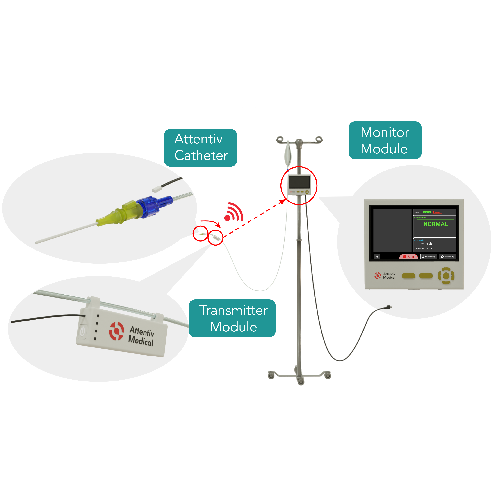
CPEN 333: System Software Engineering
In this collaborative project, multiple independent systems for a simulated elevator needed to be integrated with parallel threads and processes accessing mutual resources. Early planning of architecture allowed for more efficient development and integration.
Operating systems principles, real-time systems, principles of concurrent and multi-threaded programming, information structures, introduction to object oriented analysis, design, and modelling using UML, testing of software systems.
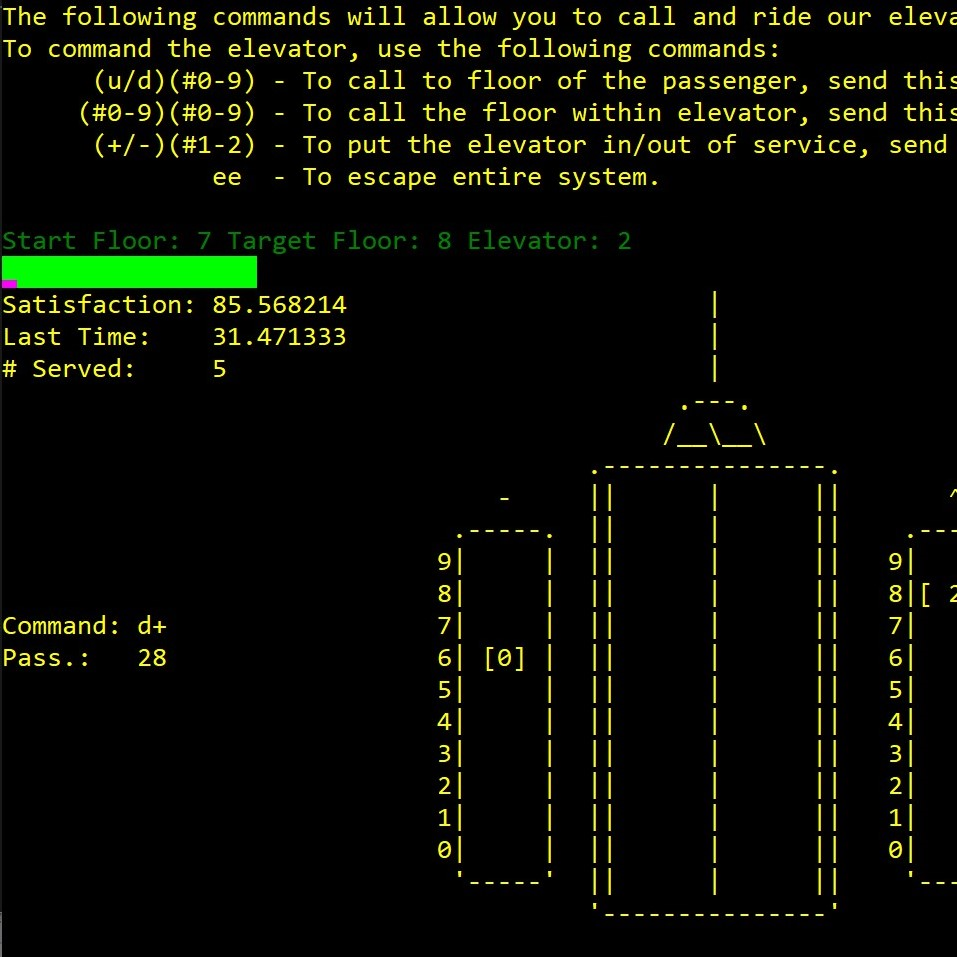
MECH 423: Mechatronic Product Design
With a limited development budget, I was tasked to create an integrated mechatronic device. I built an automated bubble blower which utilizes ultrasonic sensors to spray bubbles at people walking by.
Design of mechatronic systems for industrial and human-centric applications; compliant structures; electronic circuits to interface with sensors and actuators; embedded systems; precision timing and control; data acquisition and processing; user interfaces; and product innovation.
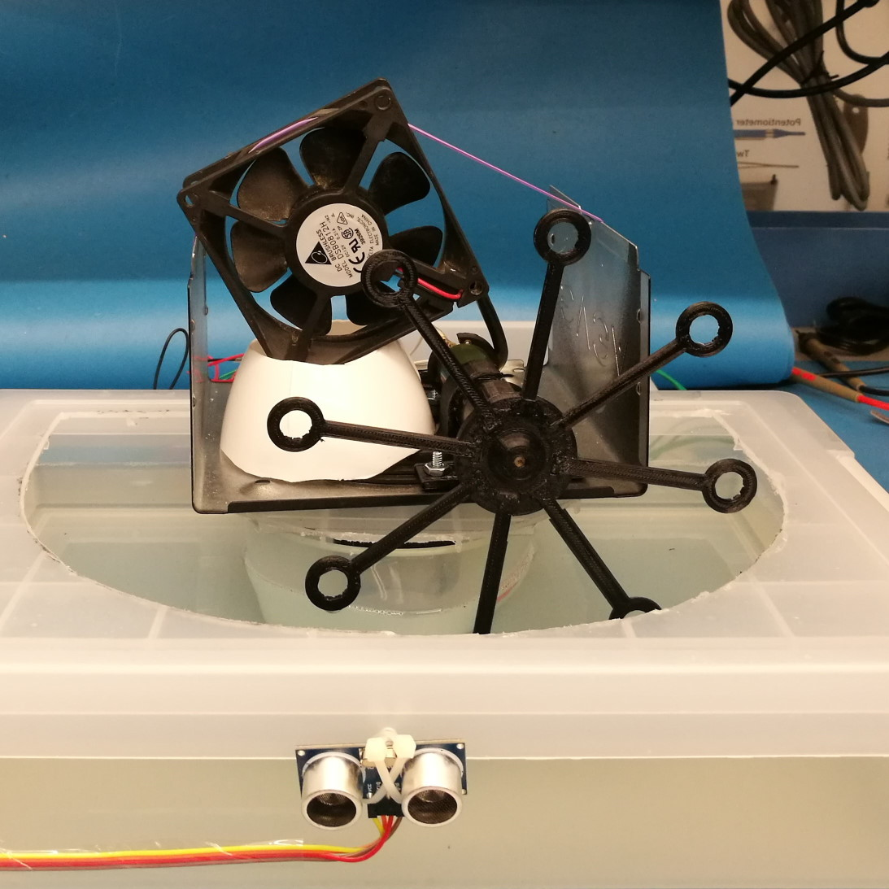
MECH 328: Mechanical Engineering Design Project
Given the difficulties of backcountry skiing, especially in ascending snow hills, my team developed a flexible exoskeleton that uses cable to assist the biomechanics of the hip flexors. This design proposal incorporated multiple analyses for biomechanics and robustness.
Applying the design process, making educated assumptions and decisions, and working in teams to provide a new mechanical design. Weekly lecture discussing product development and various factors affecting the design.
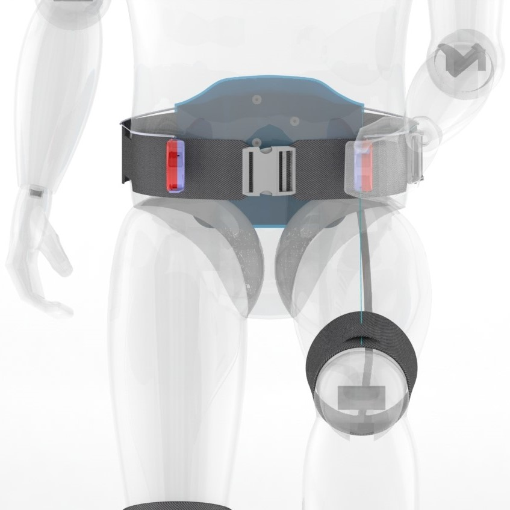
CPEN 312: Digital Systems and Microcomputers
This project involved building clocks and calculators out of digital logic.
Data representation in digital computers; boolean algebra; the design and optimization and implementation of combinatorial and sequential circuits; modern digital circuit technologies; memory and programmable logic devices; organization and operation of microcomputers; data/address bus organization; input-output interfacing.
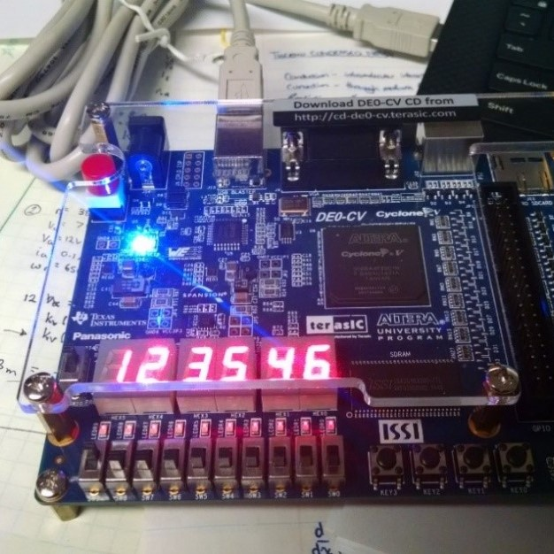
MECH 223: Introduction to the Mechanical Design Process
The second project within MECH 223 focused on simulating a rescue operation by a remote-controlled fireboat. A combination of cost metrics were weighed against effectiveness through emergency simulation challenges. These include manoeuvrability trials and fire extinguishing capabilities.
Design methodology, synthesis and analysis. Design projects representing both mechanical mechanism design and thermofluid systems.
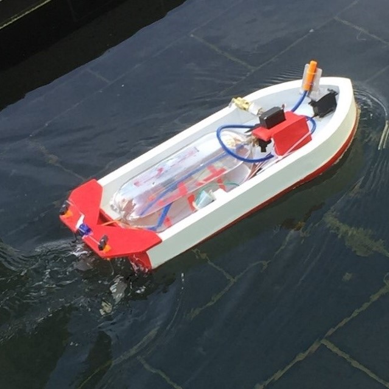
MECH 223: Introduction to the Mechanical Design Process
The first project within MECH 223 challenged teams to build a regenerative braking vehicle. The core challenge of storing and releasing energy, primarily through mechanical means, proved to be a significant challenge in development.
Design methodology, synthesis and analysis. Design projects representing both mechanical mechanism design and thermofluid systems.
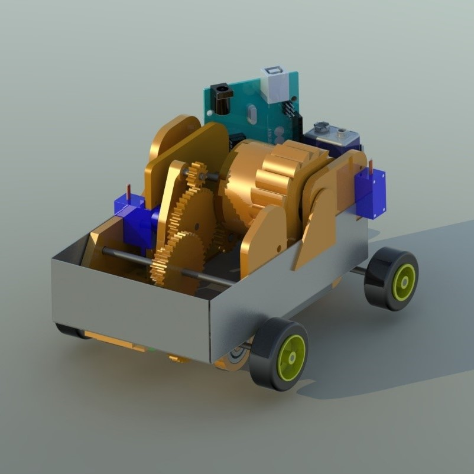
MECH 220: Technical Skills Practicum
This hands-on course provides a crash course in engineering fundamentals to build a magnetic levitator, a device that levitates a rod through a powered solenoid.
Engineering graphics, spatial visualization, CAD, equation solvers, machine shop practice, electronic circuit construction and troubleshooting, elements of engineering science.
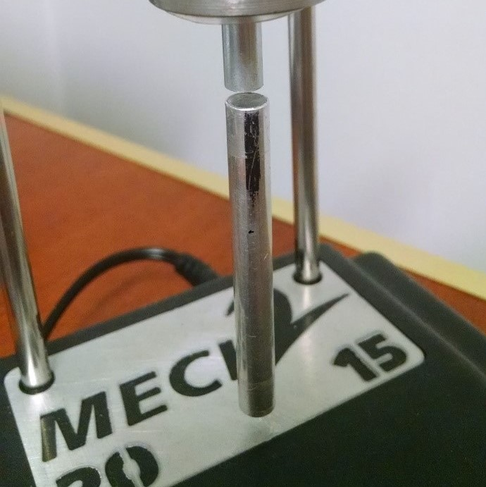
APSC496
Instrumented Catheter for IV Infiltration
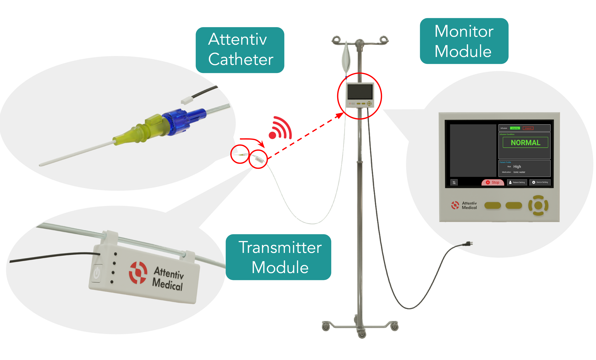
Device overview for the attentiv catheter concept
New Venture Design
entrepreneurship innovation R&D
National Winner @ 2020 James Dyson Award
1st Place @ 2020 Microsoft Discover AI - Healthcare Stream
2nd Place @ 2020 Innovation OnBoard, UBC's Premier Start-up Competition
2020 New Venture Design UBC Faculty of Applied Science Award
2020 New Venture Design Industry Judge Award
2020 Create the Future Design Contest Top 100
2020 Dempsey Start-up Competition Investment Round Alternative
2019 RBC Get Seeded Winner
In this entrepreneurship course collaboration with fellow engineers and business students, we explored the issue of IV infiltration, a complication in the administration of intravenous fluid. This issue is a common complication which has infrequent, but highly severe consequences. With certain vulnerable populations like the young, the elderly, and the sick, these complications can lead to permanent damage to tissue or worse.
Working with clinical researchers and nurses, we developed prototypes of a sensor-integrated catheter which looks to identify electrical characteristic differences when an infiltration occurs. We utilized a variety of sample models, ranging from biological tissue (meat and blood) to synthesized models involving gelatin and pumped saline water.
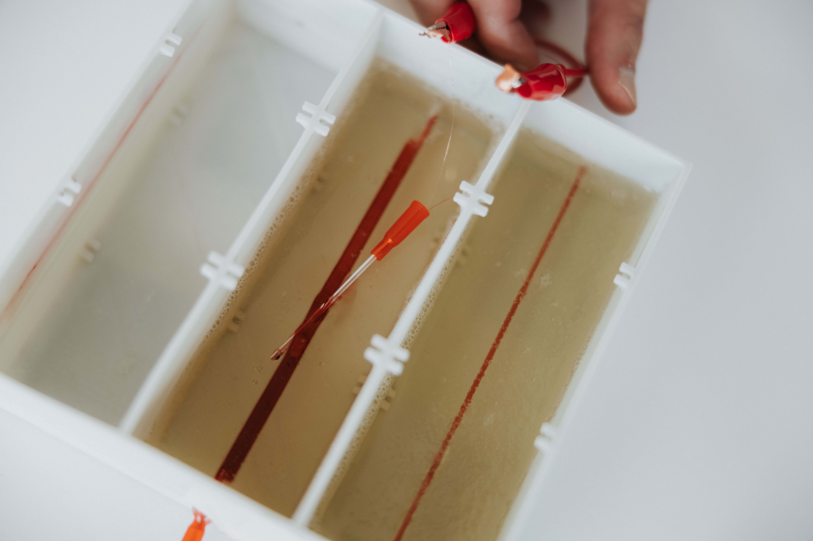
Gelatin model test for dynamic IV infiltration event
To simulate the effects of an active IV delivery system, we developed a novel experimental set-up where we could capture dynamic data when an infiltration occurs and with pressure in the system.
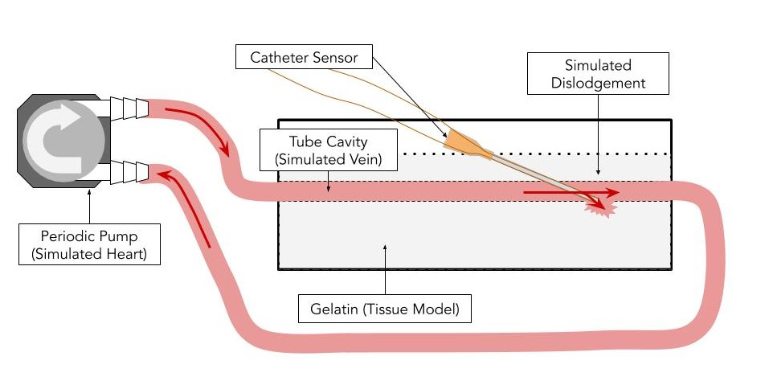
Set-up of the experimental phantom incorporating sythetic blood flow
In developing our entrepreneurial project, I:
- Collaborated with engineering and business students to develop a prototype sensor-embedded catheter to detect IV infiltration
- Validated problem and needs specifications with over 70 clinicians, nurses, and domain experts in the field of biomedical development and patient care to strengthen our business case
- Performed various critical function prototypes with different scopes including meat-blood tests, gelatin-saline tests, and pig cadavers to capture in-vivo conditions
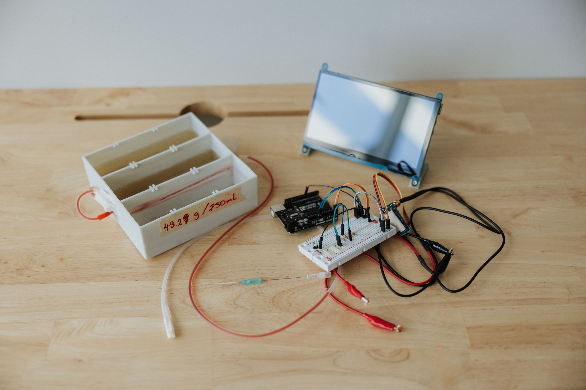
Prototyping hardware used in proof-of-concept testing
The progress we made on a potential solution will help create solutions in this critical healthcare space, especially for vulnerable populations. We are currently working on summarizing our work to add to the tools available for addressing IV infiltration.
MECH423
Salvaged Bubble Blower
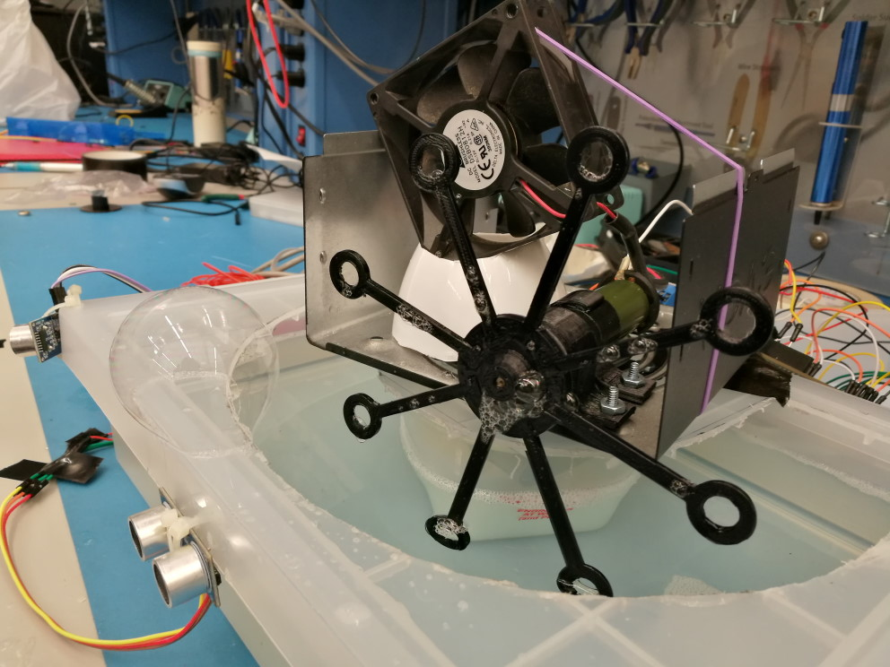
Bubble blower mishmashed from salvaged parts and 3D-printed parts
Mechatronic Product Design
c c# microcontrollers motors debugging
For the mechatronic product design final project, my partner and I fabricated an automatic bubble blower that incorporates two DC motors and a stepper motor within a 1 week deadline.
The device incorporates:
- A bubble wand carousel rotating at a controlled speed to coat the openings with bubble solution,
- A fan generating the airflow needed to blow bubbles through the wand,
- A rotary platform that allows the bubble exit to point in different directions,
- A laptop user interface to control fan and carousel speed, as well as platform position (with an option in the user interface that puts the device in automatic mode directing bubbles at the last object picked up with the proximity sensors.
Salvaged Components
- Re-utilized materials found in e-waste and salvage rooms for our project to work under limited project budget ($30)
- Repurposed power supply chassis for the rotating base and a power supply fan to generate airflow
- Explored the different components inside what we commonly think of as "junk"
Mechatronics Integration
Some critical mechanical, electrical, and programming aspects of this project include:
- Ensuring proper voltage supply to all power components and sensor components
- Proper interrupt-service-routine (ISR) programming and serial communication
- Physical mechanical fabrication and assembly of the system
- Integration of electronics with the microcontroller programming
CPEN333
Real-time Multitasking Elevator Simulation
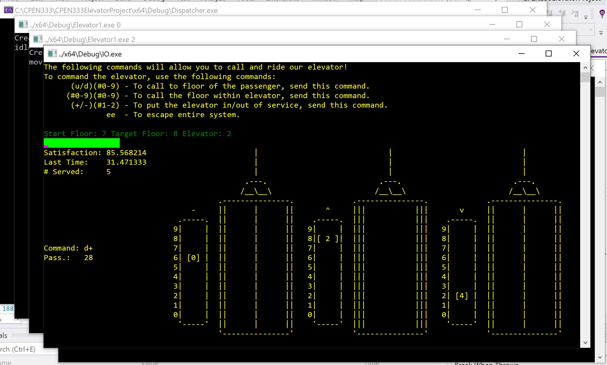
Console displays for different threads and processes in elevator simulation
Software Systems Engineering
c++ real-time systems mutexes synchronization threading multiprocessing
CPEN 333 is a software systems engineering course with practical applications of real-time systems. This project involves multiple simulated elevators being fed commands by a dispatcher algorithm which monitors all the elevators' states. User input or automatically generated passengers feed commands via an IO terminal which is sent to the dispatcher through a pipeline.
Multitasking
Key concepts in software system engineering for running multiple tasks simultaneously were required, including:
- A combination of threading and multiprocessing for elevators, controllers, and agents
- Interprocess communication like datapools, pipelines, and mailboxes to allow for the different tasks to communicate with one another
- Mutexes, semaphores, and conditions to protect read/write operations and synchronize tasks
MECH328
Backcountry Ski Ascender
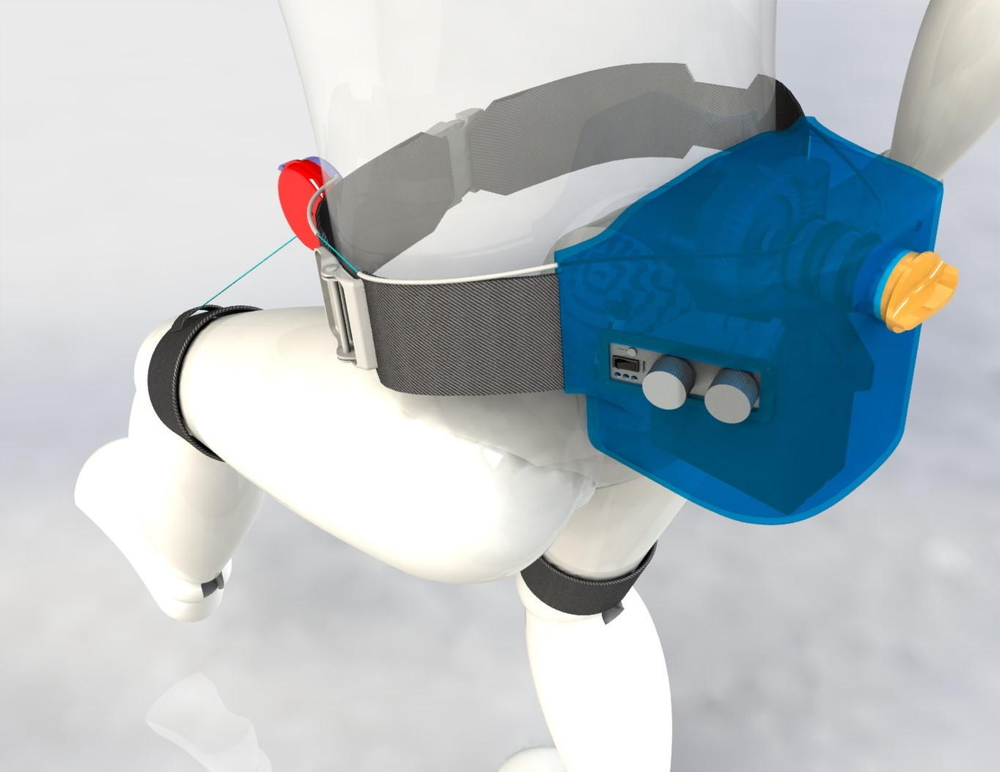
Biomechanics assist tool for backcountry ski ascension
Third Year Project Course
biomedical design analysis parts spec.
MECH 328 is the senior design project where we are tasked with a design problem and must perform an in-depth design analysis. The challenge was to design a device to aid back-country skier ascend terrain more easily and to maximize the amount of skiing the user could accomplish in one day. My team designed a flexible biomechanical assistance device which aids the hip flexor motion. Strapped to your back, this device aids lifting your leg upward for each step, reducing the amount of energy needed for the user to ascend slopes.
I performed:
- Biomechanical modelling of the forces acting in backcountry skiing
- Analysis on additional support without impeding the user during downhill descent
- Extensive design to set-up the device to be ready for future in-depth prototyping with all mechanisms specified and expect
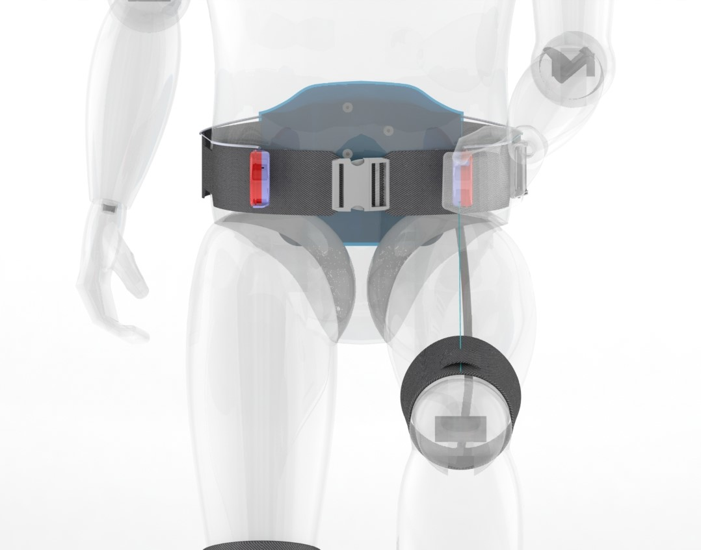
Frontal view of backcountry ski ascension
Biomechanical Analysis
The biomechanics analysis found:
- The hip flexor as the muscle in most need of assistance
- Hip flexors were not designed to lift heavy loads beyond the weight of the leg and are often the weakest link for backcountry skiers.
Mechanical Advantage
One of the key attributes of providing assistance is proper mechanical advantage. We can achieve this by:
- Positioning the pulley system above the hip to provide greater mechanical advantage compared to the low torque arm provided by a typical hip flexor.
- A clutch mechanism that allows for assistance when needed and slack when not
- Adjusting to the user’s stride, allowing aid to both experienced and novice backcountry skiers
Design-in-Detail
As a in depth design course, a number of attributes were explored and presented in a comprehensive report.
This report included:
- General engineering analysis, with calculations, research, and the final design assembly, including detailed engineering drawings
- A cost estimate with all components specified such that the vested party (the course instructors) would be able to evaluate the economic viability
Producing this report took the expertise of a team of six students with specific strengths within mechanical design, allowing a thorough analysis of a complex system.
CPEN312
DE-0 Board Clock & Calculator
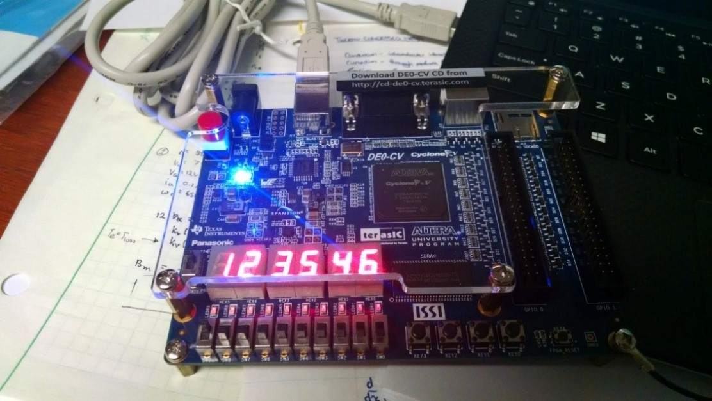
Altera DE-0 board
Digital Systems & Microcomputers
digital logic
VHDL
assembly
digital logic VHDL assembly
CPEN 312 is a digital logic that incorporates a number of elements including digital logic, assembly programming, and hardware description languages. The projects ranged from a number of tasks including timers and clocks to calculators.
This course utilizes the Altera DE-0 board and gave me the opportunity to program in VHDL and in assembly a counter, a timer, a calculator, and a frequency measurer.
VHDL
Utilizing VHDL, I created:
- A timer and a simple calculator out of latches and switches
- Simulated digital circuits to understand the hardware on a physical level and how VHDL provides a way to abstract the hardware (i.e. describe the hardware)
Assembly
Moving up one level in abstraction, we began to delve into assembly with a simulated CV-8052 microprocessor. The two key projects with emulated hardware include:
- A BCD calculator
- A frequency measurer which was tested in a lab room with a signal generator
MECH223
Scale Fire Rescue Boat
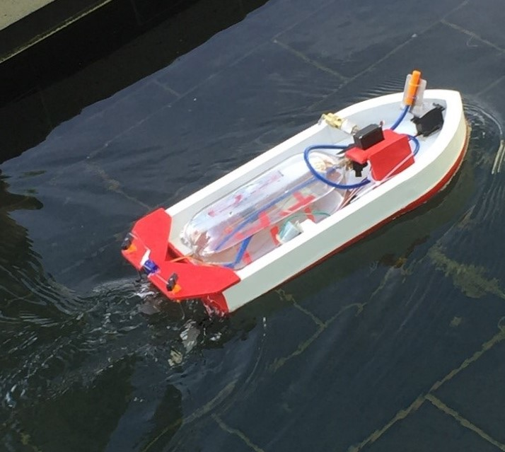
Small-scale remote-controlled fireboat
Second Year Project Course
design
rapid prototyping
fluids
design rapid prototyping fluids
The second project for the MECH2 project course aims to simulate a fireboat response to emergencies in the water. The project involves:
- The construction of a remote-controlled water-traversing vehicle with the capability of delivering water
- Considering various attributes such as speed, reliability, aim, and water delivery are weighed for the final score, with specific simulations to economic viability
Final Design
Our design used:
- A pine wood hull with a servo-motor controlled rudder to direct our vessel
- A standard DC motors used for propulsion
- A nozzle and valve controlled separately with servo motors for the water delivery system
- An RC controller to send commands for the above systems
I focused on the electric systems to ensure that they all functioned as expected. I also provided general mechanical input regarding hull design and the water delivery system.
Scale Regenerative Braking Vehicle
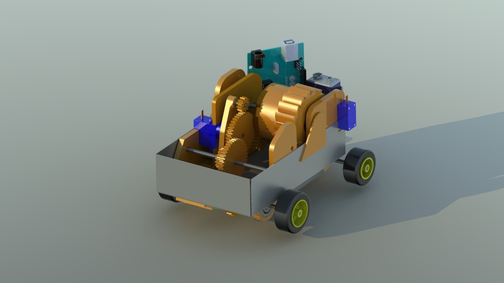
Small-scale mechanically-autonomous rengenerative vehicle
Second Year Project Course
design rapid prototyping kinematics arduino
The first project in the MECH2 project course was to develop a regenerative braking vehicle. This vehicle must convert potential energy into some stored energy, brake, and then re-release that energy to move forward.
This project involves:
- Considering various aspects such as size, weight, and performance all affect the final result
- Developing a comprehensive design report to justify every decision to simulate a larger real-world engineering project
Final Design
The key aspect of the design is how to store and release energy. Our design incorporates:
- A torsional spring to store and release energy for braking
- A gear switching system that can change from forward spin to reverse spin, allowing for the spring to wind in one direction and release in the other (this factor was a primary concern due to the nature of how springs store and release energy in opposite directions)
- A rotary encoder was used to track distance and speed to control braking
MECH220
Magnetic Levitator
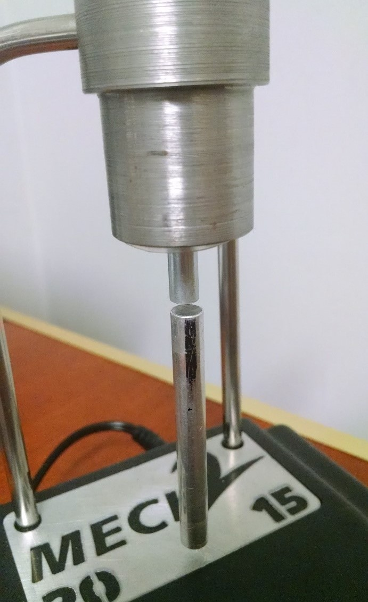
Student-fabricated on magnetic levitator
Fabrication & Design Fundamentals
machining soldering drawings tolerances
MECH 220 is the second year introduction course covering design fundamentals for mechanical engineers. The material covered in the class include hand drafting and dimensioning, 3D modelling, machining, and instrumentation. These skills are put to use to develop a magnetic levitator which keeps a rod floating using a feedback controlled solenoid.
Fabrication
- Many of the parts, such as the steel housing, were constructed using lathes to form parts as accurately as five thousandth of an inch of precision. Supports were made form hollow steel tubes.
- Technical drawings of many of the major parts were also constructed and used to coordinate tolerances on project parts.
- The final aspect was the electronics portion of the mag-lev. rom multiple feedback operational amplifiers and a variable potentiometer, the resulting magnetic force could be modified so the feedback strength kept the rod levitating.